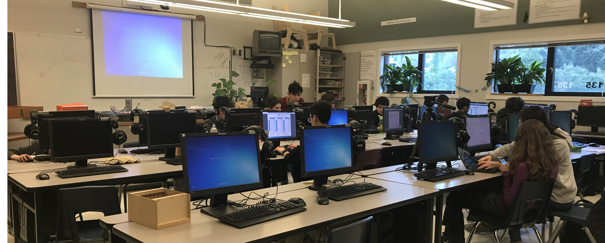
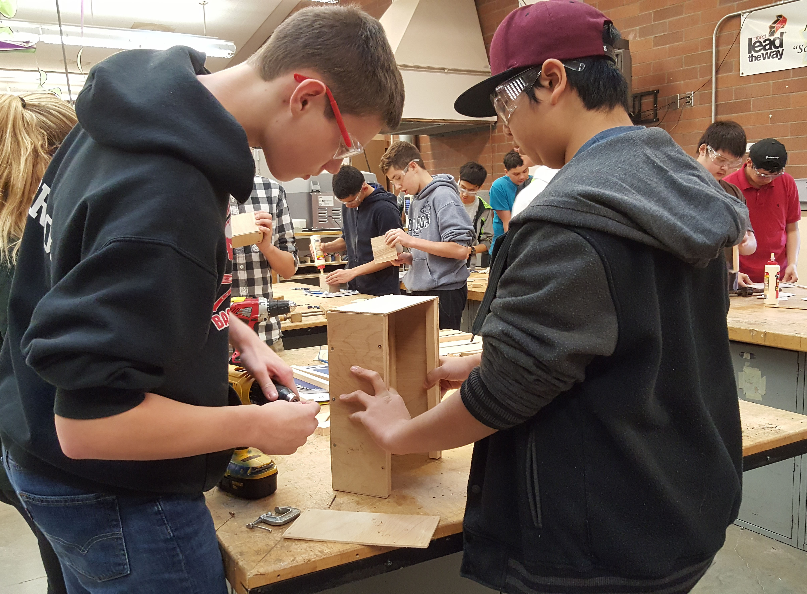
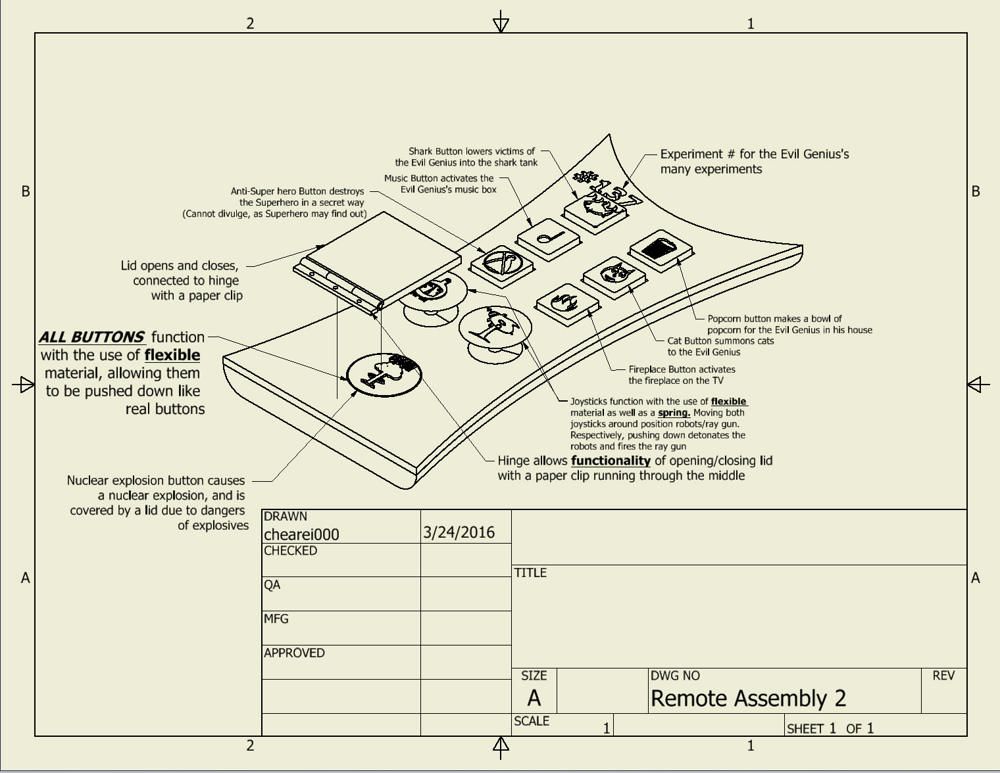

IED is the first class in high school for enthusiastic participants of the STEM program. The only qualification for enrollment into IED is that students must be in Geometry, or any higher level math course. Throughout the course of IED, students will learn how to go through the design process, sketch multiview drawings, use CAD, and ultimately, build successful projects. As well as all this, IED students who happen to be in tenth grade or higher can receive college credit from the UW as Engineering 114.
Class Structure
IED is a class of teamwork and leadership. Unlike other classes, there are no "tests" or "exams," but rather long term projects worked on in teams consisting of four to six members. In the first few weeks, students will go through lectures learning how to use CAD, the design process, orthographic sketches. After that, students will take part in fun and innovative projects, with little to no restrictions on what students can build. As equally as important, students learn fundamental presentation techniques to showcase their completed projects. Grades are based on student effort, and not so much on their completed project; the class teacher, Mr. Wilson, finds that it is "cruel to grade fourteen year olds on their final creation." Receiving an A is as simple as putting forth your full effort!

CAD 3D Design and Engineering
Before tackling large scale projects, students must first learn the design process, proper use of their engineering notebook, how to draw orthographic sketches, and how to design models in a CAD program. Students are each provided with an engineering notebook, and spend the first two weeks through lectures, learning how to properly use their notebooks, as well as draw isometric sketches, then three view dimensioned orthographic sketches. Students spend time modeling basic 3D printed objects in their engineering notebooks as orthographic sketches, complete with all necessary dimensions. After completing basic engineering notebook sue skills, students move into learning how to use CAD to design models. In IED, students use a powerful program called Autodesk Inventor, which contains all the tools students need to design anything they wish. Students learn how to draw and model parts, as well as assemble parts together within the program. Students follow the book, Parametric Modeling with Autodesk Inventor 2018, to learn various tools within Inventor and complete first-step assignments before taking on their first project.
Choose Your Own Adventure
After learning basic CAD skills and the engineering design process, students take on their first large scale project: CYOA. CYOA, or Choose Your Own Adventure, lets students sketch, design, and fabricate two abstract 3D printed parts of their choosing. Students must first learn how to use power tools, such as the drill press, belt sander, and bandsaw, before proceeding to take on this project. After passing a shop safety test, students choose two abstract parts and produce orthographic sketches of them in their engineering notebook with all necessary dimensions. After that, students replicate the part in Inventor to test their CAD skills. Finally, students use slabs of wood and fabricate the two parts by glueing, drilling, and cutting the wood to replicate the original 3D printed Parts.


Think Inside The Box
The next project for IED students is TITB, or Think Inside The Box. This project calls for students to design a wooden box for any paraphernalia of their choosing. With this, students are able to choose both the size and functionality of the box, which will be constructed from wooden sheets and ¾ inch wooden blocking. Students must first create isometric sketches of the box, with dimensions, then move on to designing and assembling the box in inventor. At this point, students create an orthographic sketch of each of their components and their assembly in Inventor, adding all necessary dimensions. In addition, students create an exploded view of the assembly, which depicts how all parts go together to form a box. Students then head to the shop, and use all necessary power tools to cut out pieces for the box. Finally, students learn the glue and screw technique, using wood glue to adhere components together before screwing parts together with a hand drill. The result is a wooden box that varies based on the desire of its creator.
Client In Need
With CIN, or Client In Need, IED students learn a crucial skill to the engineering design process: customer constraints. With CIN, students work in teams and select a random card depicting a cartoon character, as well as another card explaining what the students must create for the character they selected. Students spend time studying their character’s card, looking for hints and details as to what type of personality the character may have, which will help them design their chosen item. Students brainstorm ideas and each team member creates three sketches of how they think their client’s item should look and function. After students decide on a final design, they work to model all parts in Inventor. Students follow the exact same procedure as they did in TITB, creating a model of their design, as well as orthographic sketches. Finally, students 3D print their final model followed by a group presentation explaining their final design to the rest of the class.

Game of Thrones
GOT, or Game of Thrones, is very similar to CIN. However, rather than receiving a fictional client as a customer, students must design a chair for a real life client. Students can choose to design a chair for companies such as Ikea or Mandula (a yoga company), and must act as if their company will actually purchase their chair from them. Students enter the field, often watching and taking notes as customers purchase chairs at their selected company. Eventually, students use their notes and observations to develop a chair based on the needs of their mock company. As with CIN, students work in a group to brainstorm ideas, eventually selecting a chair as their final design. After sketching and designing the part in Inventor, teams lasercut a small version of their chair and assemble it to ensure that all pieces fit together properly. If their chair passes the test, students cut out a full sized version of their chair from a four foot by eight foot piece of wood on a large CNC machine. Finally, students present on their chair, explaining their design process as well as how the chair meets their client’s needs.
About The Teacher: Mr. Wilson
Mr. James Wilson is MTHS’s IED teacher. Mr. Wilson has spent most his time in Washington, where he received his high school education at Edmonds Woodway High School and teaching degree at Western Washington University. After a mentorship at Mt. Vernon whilst leading their TSA, Mr. Wilson took interest in Texas after going there for the national TSA competition. He decided to move there for a few years, fascinated by the culture. He served as a TSA and robotics advisor in his time there, helping his students take home top awards. Eventually, he moved back to Washington, where he was employed by the Edmonds School District to teach IED, but ceased to advise technology clubs. However, three years, he had reinstated himself as the MTHS TSA advisor, and is leading his school to victory, all while obtaining his Master's in October 2018.